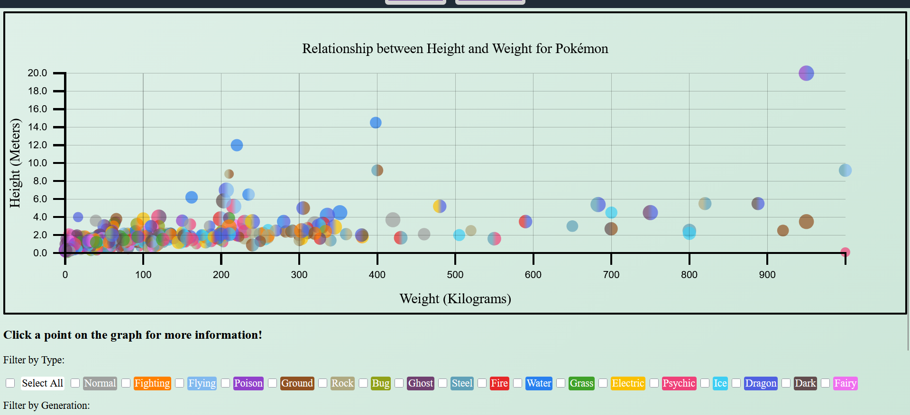
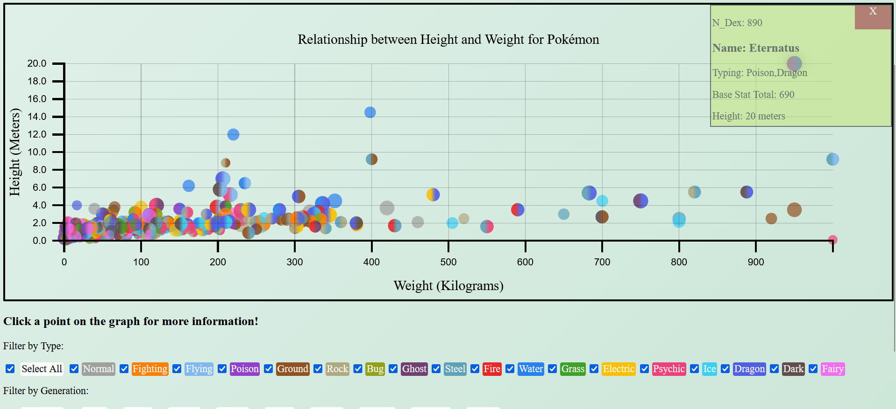
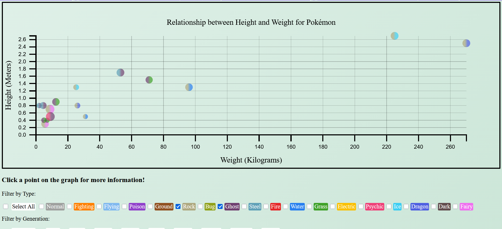
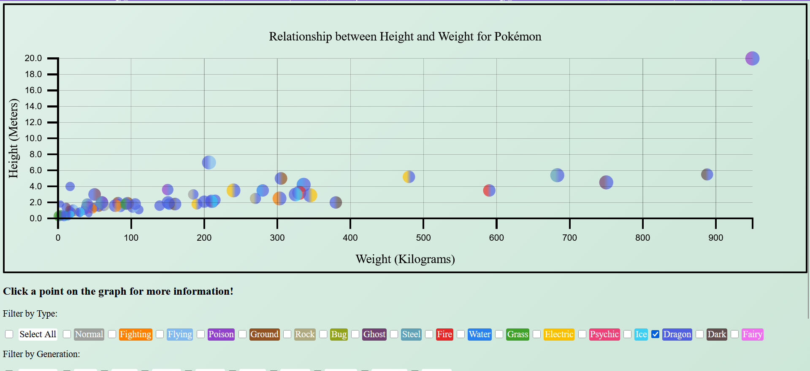
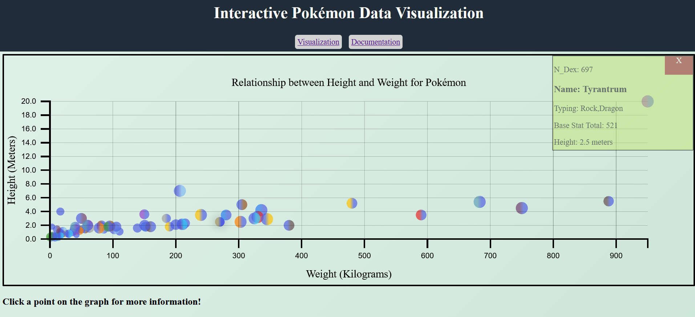

My design process actually started with a separate project: one from a web mining course. The goal of that project was to scrape a dataset from a website and then perform some operation on the dataset to analyze it. As I worked on that project, I thought it would be a fun idea to try to expand the dataset for reuse with this project.
The dataset I came up with was scraped from the Bulbapedia site, a fan-operated encyclopedia containing detailed information on all aspects of the Pokémon franchise. It contains information on every Pokémon from the National Pokedex (a collection of all currently released Pokémon from the game series).
From the beginning, I knew I wanted my visualization to be a scatterplot since I wanted to be able to include every Pokémon in it. Until the last minute, however, I wanted it to be more interactive. I wanted the user to be able to change the axes to different numeric variables, like switching the y-axis from height to BST. Unfortunately, I simply ran out of time to implement this. There was also an early version of the graph that attempted to use bins of the ordinal variables (like Pokémon grouped in hundreds or by generation), but this was even more daunting for the amount of time I had to work with. In the end, the final product you see on the visualization page isn’t too far off from my original concept.
I know more isn’t always better, but I was very happy to be able to include as many attributes as I did, and in a way where they all made sense. Since the graph is a scatterplot, the basic mark is a point.
Height and weight are the easiest choices to explain: they’re both ratio numeric variables that are easily comparable. A larger height and weight means something is bigger, and a smaller height and weight mean the opposite. Once my plans for variable axes fell apart, it made sense to keep those two attributes as the axes. As a side note, height is often equated with length for certain Pokémon. Sandaconda is a snake-like Pokémon that almost always appears coiled up on the ground, but it’s given a height of 3.8 meters because of its total length.
Typing was also an easy decision (though a much more frustrating implementation). In the game series, types are almost always associated with certain colors (grass types are green, fire types are red, etc.), so people who know the data can tell the typing of a Pokémon from a glance, and those who don’t know can see from the filter/legend.
I knew I wanted to encode an additional attribute as point area from the beginning, but I wasn’t sure which one to use. Once height and weight became relegated to the axes, BST sort of fell into place as the only other interval attribute where area would be meaningful. A larger BST typically implies a Pokémon is “better” or “stronger”, and we often associate “bigger” things with being “better”, so it just made sense.
Generation and Typing I used as filters because they were the easiest attributes to implement as filters. I originally planned to use the others too (e.g., show only points where the Pokémon has a catch rate < 50), but lacked the time to implement them. I think the filters are my favorite part of the visualization because they work together. For example, you could filter to only show Bug-type Pokémon from Generations I or IX. This could answer a question like “Are new Bug-type Pokémon larger than old ones?”
The final extra for my visualization was something of an epiphany I only thought about halfway through the design process: the infobox. You can click on any point in the chart to get all information relevant to that Pokémon. Clicking on Wailord (as I did many times during testing), will open a small window in the top right of the SVG containing all of Wailord’s attributes (e.g., a height of 14.5 meters and a catch rate of 60).
With the x and y-axes stuck with weight and height respectively, the questions we can answer with the visualization are limited to those topics. However, due to the sheer number of encoded attributes, there is still some variety to be had.
The most obvious question, and I’m sure the one you had when you first saw the chart title: “What is the largest Pokémon?” (excluding additional forms because I didn’t collect those).


From the base chart, we can tell that I should’ve included BMI as a variable. We can also tell that it’s likely the Poison/Dragon type in the top right with a height of about 20 meters and a weight of about 950 kilograms. Popping open the infobox reveals that the Pokémon is “Eternatus”, the 890th Pokémon in the National Dex, from Generation VIII.
Another question, this time using the filters: are rock or ghost types from Gen VI bigger?

After filtering, we can count eight ghost types and eight rock types from Gen VI. Six of the ghost types don’t make it past 1m, 20kg, and the top three largest Pokémon are all rock types (the biggest being either Tyrantrum or Aurorus). It would make sense to say rock types are bigger than ghost types in Gen VI, and it looks like the same mostly holds true across all generations. This is also a logical conclusion: we associate rocks with being large and heavy, while ghosts are typically depicted as small and floaty.
One more question, using BST: is BST a good indicator of size in Dragon-type Pokémon?


After filtering, we can see that I should’ve included a function for line of best fit. However, we can also observe points with smaller areas congregating near the bottom left, while points’ areas slowly increase in size as the Pokémon increase in size. The ~six outliers in terms of size also all have BSTs of 570 or more. Further, the largest Pokémon with a “low” BST is Tyrantrum (again) with a BST of 521. It’s behind not only the six outliers, but an additional seven points.
Overall, this dataset is very good for exploratory analysis, looking for trends and correlations between attributes.